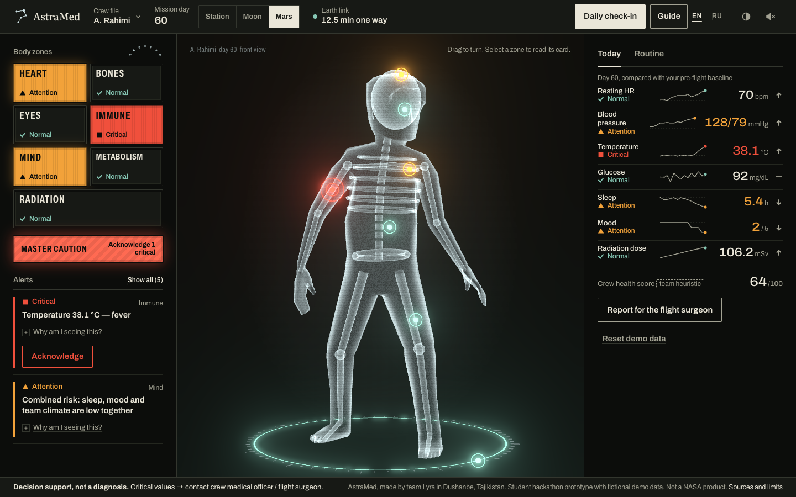
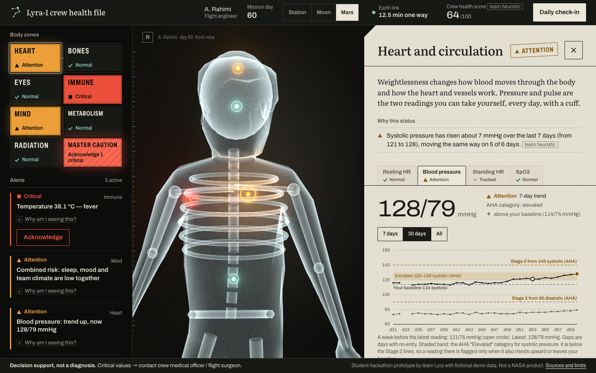

A health file
the crew can read
without Earth.
AstraMed is an offline self-assessment health monitor for astronauts on long missions.

Far from Earth, the doctor is minutes away — or out of reach.
On long missions to the Moon and Mars the crew lives with health risks every day, while help from the ground is delayed or cut off.
one-way signal delay to the Moon
one way to Mars at 140 million miles — and blackouts with no link at all
hazards of human spaceflight: radiation, isolation & confinement, distance from Earth, gravity fields, hostile closed environments
So the first line of care is the crew's own daily self-check — it needs a tool that works with no ground support.
One check-in a day.
Seven zones.
One clear status.
The astronaut logs heart rate, blood pressure, temperature, glucose, sleep, mood and radiation dose.
Every step runs on the crew member's own device.
Daily check-in
typed readings, checked on entry
Local store
stays in this browser, no server
Rules engine
limits from one sourced file
- Reference range
- Personal pre-flight baseline
- Seven-day trend
- Combined risk
Zone status & alerts
Normal · Attention · Critical, each with “why”
Report queue
PDF + JSON for the flight surgeon
Earth link
sent when a link exists (simulated)
Works in a blackout
No connection needed after the first visit — the site installs itself for offline use.
Private by design
Medical data never leaves the device; export, import or delete it in one click.
Explains itself
“Why am I seeing this?” shows the value, the limit and its source behind every alert.
Every limit has a source — or says it doesn't.

Not another dashboard — a body you can read at a glance.
3D holographic body
Zones glow by status; only Critical pulses, so alarms keep their meaning.
“Why am I seeing this?”
Every alert opens its value, the limit and where that limit comes from.
Station · Moon · Mars
One switch changes the Earth-link delay and the radiation context.
Your own crew files
Several crew members per device, personal baselines, export and import.
English · Русский
App and Guide in English and Russian; dark or light theme.
Its own voice
A soft motif inspired by Tajik Shashmaqam, synthesised in code — off by default.
Decision support, not a diagnosis.
Today
- Working prototype anyone can test — demo mission or your own crew file
- Demo data is fictional; not yet tested with a real crew
- Critical values always say: contact the flight surgeon
Next
- Review every threshold with space-medicine doctors
- Read wearable sensors instead of typing values
- Real two-way sync with Earth whenever a link is up
Try it now
osiyasadulloeva3-arch.github.io/astramedTeam Lyra · Dushanbe, Tajikistan.
Idea and decisions by the team; code built with the help of Claude Code (AI). No NASA logos; not a NASA product.